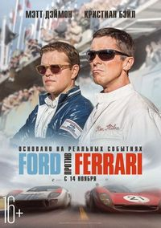

MoviepleX
Изданный императором Китая указ о призыве на службу в Имперской
армии одного мужчины из каждой семьи для защиты страны от северных захватчиков вдохновляет Мулан, старшую дочь
почетного воина, занять в войсках место своего больного отца. Маскируясь под мужчину, девушка подвергается
испытаниям на каждом шагу, проявляя свои внутреннюю силу и истинный потенциал.
Подробнее...
В начале 1960-х Генри Форд II принимает решение улучшить имидж компании и сменить курс на производство более модных автомобилей. После неудавшейся попытки купить практически банкрота Ferrari американцы решают бросить вызов итальянским конкурентам на трассе и выиграть престижную гонку 24 часа Ле-Мана. Чтобы создать подходящую машину, компания нанимает автоконструктора Кэррола Шэлби, а тот отказывается работать без выдающегося, но, как считается, трудного в общении гонщика Кена Майлза. Вместе они принимаются за разработку впоследствии знаменитого спорткара Ford GT40.
 Подробнее...Секретный агент Лойд Форджер узнаёт, что его могут отстранить от выполнения текущей миссии. Чтобы остаться в строю, его приёмная дочь Аня должна заработать достаточное количество звёзд Стеллы и стать имперским стипендиатом в академии Эдем. Узнав о кулинарном конкурсе, в котором победившая студентка награждается звездой Стеллы, Лойд изучает рецепт десерта, который больше всего понравился бы судье. Однако для идеального приготовления любимого блюда судьи требуется нечто большее, чем просто следование рецепту.
Подробнее...С древних времён девушки с необычными голосами охраняют людей от демонов: пением устанавливают защитный барьер, чтобы зло не проникло в наш мир. Такова миссия трёх участниц женской кей-поп-группы Huntrix, и они с ней успешно справлялись, пока их фанатов не начала переманивать мужская — команда коварных демонов, прикидывающихся симпатичными парнями.
 Подробнее...
Подробнее...
Продолжение семейной мультипликационной комедии о высокоинтеллектуальных младенцах – сотрудниках небесной корпорации по «производству и выпуску» детей. Умники в пеленках, лишенные детства, вновь внедряются в обычные семьи.